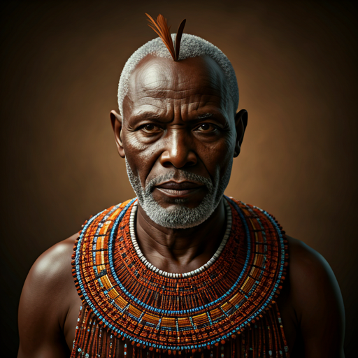
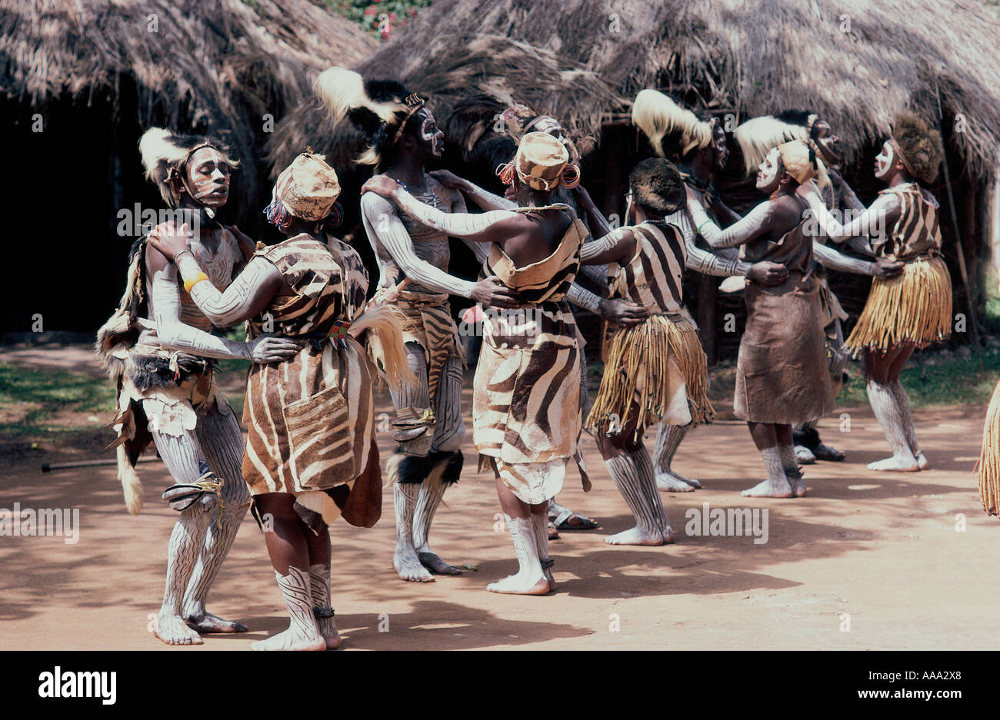
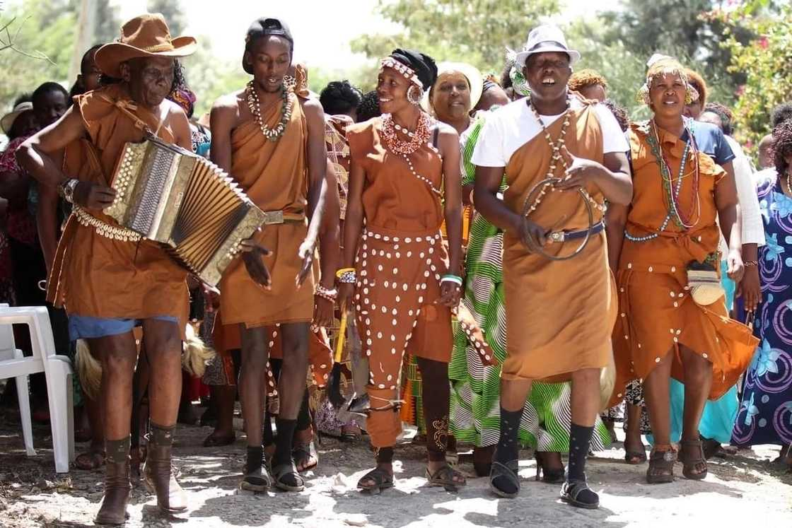
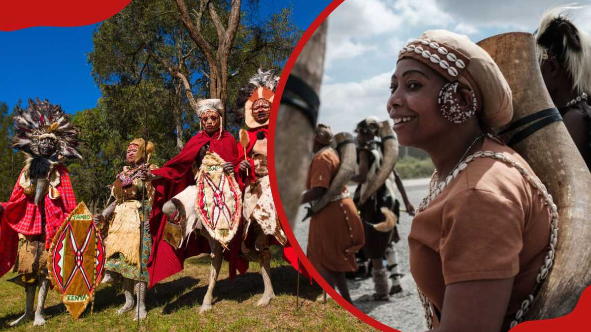
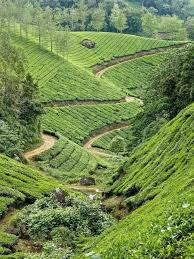
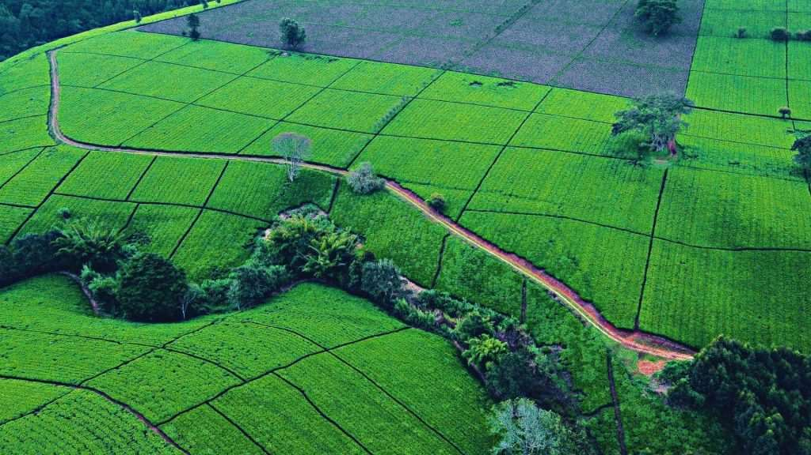
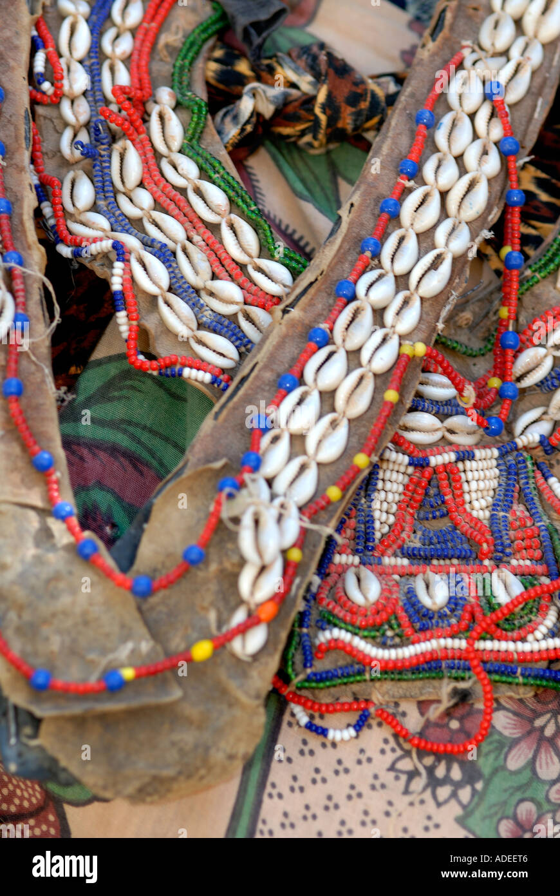
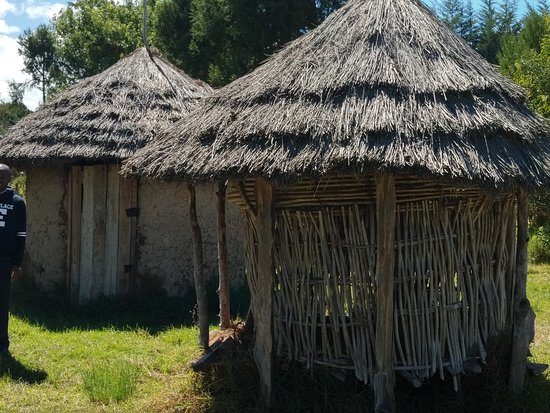

Children of Gĩkũyũ & Mũmbi
The Kikuyu, known as the Agĩkũyũ, are the largest ethnic group in Kenya. Their origins lie within the broad Bantu migration that swept southward and eastward from the Congo Basin region over many centuries. Ancestors of the Kikuyu gradually migrated through the dense forests of central Africa, driven by the search for fertile, arable land.
According to their foundational oral tradition, the creator deity Ngai placed the first man, Gĩkũyũ, and his wife Mũmbi on the fertile ridges near Mount Kenya (Kĩrĩnyaga). From their union came nine daughters, each founding one of the nine Kikuyu clans. This sacred narrative of origin ties the community inextricably to the land and the mountain they revere.

The Agĩkũyũ: Living History

Customs & Traditions
Kikuyu culture is deeply agricultural and ceremonial. Life was structured around age-sets (Riika), where each generation passed through shared rites of passage. Circumcision — both male and female — historically marked the transition from childhood to adulthood, binding age-mates together in lifelong brotherhood and sisterhood.
Music, poetry, and storytelling were central to community life. The gĩcandĩ (a riddle poetry tradition) and mũgoiyo dance were performed at harvests, initiations, and celebrations. The Agĩkũyũ believe in a supreme deity, Ngai, who dwells on Mount Kenya and is approached through prayer and animal sacrifice at sacred fig trees (Mũgumo).
Traditional Clothing
Traditional Kikuyu attire was crafted from animal hides and later cotton fabrics, adorned with intricate beadwork and ochre pigments.
Women's Dress (Mũciĩ)
Women traditionally wore wraparound leather skirts (githii) decorated with colorful beads. Glass beads from Indian Ocean traders were integrated into necklaces, earrings, and bracelets indicating age, marital status, and clan.
Men's Attire
Men wore cloaks of colobus monkey fur and cattle hide over their shoulders. Warriors and elders alike adorned themselves with copper and iron wire bracelets. Ochre paste was applied to the body for ceremonies and rites of passage.

Beadwork & Adornment
Beadwork is central to Kikuyu identity. Specific patterns and colors communicated social messages — from a young woman's availability for marriage to an elder's authority. Today these traditions are celebrated at cultural festivals nationwide.
Traditional Foods
Kikuyu cuisine reflects their agricultural lifestyle. The staple Githeri — a hearty mixture of boiled maize and beans — sustained communities through long farming days. Mukimo, a dish of mashed potatoes, maize, beans, and green vegetables, is prepared during celebrations and family gatherings.
Irio (mashed peas and potatoes) and roasted goat meat (nyama ya mbuzi) were ceremonial foods reserved for important occasions like initiations and harvest festivals. Food was deeply tied to social bonding — sharing a meal signified trust, reconciliation, and communal solidarity.

Economic Sustainability
The Kikuyu have long been Kenya's most commercially dynamic community. Historically anchored in agriculture — cultivating sorghum, millet, sweet potatoes, and yams — they expanded into trade and craftsmanship as they settled the highlands.
Today, Kikuyu communities are significant contributors to Kenya's tea and coffee industries, small business entrepreneurship, and formal sector employment. Land ownership remains culturally central.
Agriculture
Subsistence and cash crop farming — tea, coffee, maize, beans, and horticulture — form the bedrock of economic life in Kikuyuland.
Trade & Commerce
The Kikuyu were early adopters of market trade. Today they dominate small and medium enterprise sectors in Nairobi and across Kenya's urban centers.
Craftsmanship
Ironworking, pottery, basketry, and leather tanning were traditional crafts that provided tools, vessels, and trade goods for community use and exchange.
Education & Professions
Among Kenya's first communities to embrace formal education under missionary and colonial influence, the Agĩkũyũ have produced politicians, academics, lawyers, and business leaders.
The Kiama — Council of Elders
Unlike centralized monarchies, the traditional Kikuyu governance system was radically decentralized and egalitarian. Authority rested not in a single chief but in the Kiama — graduated councils of respected elders who had passed through specific life stages (from Njama ya Ita to Kiama kia ma).
Decisions were reached through consensus. Age-sets provided military defense, while the councils managed land rights, dispute resolution, and religious ceremonies. This system was remarkably democratic and community-centered.
Dispute Resolution
The Kiama resolved land disputes, inter-clan conflicts, and civil matters through deliberation and compensatory justice.
Religious Authority
Elders officiated ceremonies and animal sacrifices to Ngai at sacred sites, particularly the Mũgumo (sacred fig tree).
Age-Set Military System
Warriors (Riika) were organized by age-set, creating loyal cohorts responsible for community defense and expansion.
Land Governance
Land was communally owned by the Mbari (extended family group), with elders managing allocation and succession.
Life Among the Agĩkũyũ

Central Highlands

